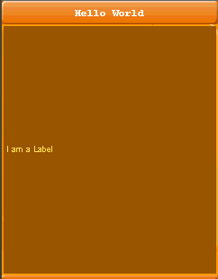

| LWUIT Developer’s Guide |
| C H A P T E R 1 |
This book describes how to use the Lightweight UI Toolkit (LWUIT) library. The Lightweight UI Toolkit library helps you create appealing graphical user interface (GUI) applications for mobile phones and other devices that support MIDP 2.0. Lightweight UI Toolkit supports visual components and other user interface (UI) ingredients such as theming, transitions, animation and more.
After covering the basics of the Lightweight UI Toolkit, this book provides a walk through of the various widgets and uses of the LWUIT packages.
The Lightweight UI Toolkit is a lightweight widget library inspired by Swing but designed for constrained devices such as mobile phones and set-top boxes. Lightweight UI Toolkit supports pluggable theme-ability, a component and container hierarchy, and abstraction of the underlying GUI toolkit. The term lightweight indicates that the widgets in the library draw their state in Java source without native peer rendering.
Internal interfaces and abstract classes provide abstraction of interfaces and APIs in the underlying profile. This allows portability and a migration path for both current and future devices and profiles. For example, Graphics would be an abstraction of the graphics object in the underlying profile.
The Lightweight UI Toolkit library tries to avoid the "lowest common denominator" mentality by implementing some features missing in the low‐end platforms and taking better advantage of high-end platforms. FIGURE 1-1 shows the widget class hierarchy.

The Lightweight UI Toolkit library is strictly a widget UI library and does not try to abstract the underlying system services such as networking or storage. It also doesn't try to solve other UI issues related to native graphics, etcetera.
To enable portability, the Lightweight UI Toolkit library implements its own thin layer on top of the native system canvas and provides a widget abstraction. This abstraction is achieved using several key classes that hide the system specific equivalents to said classes, such as Graphics, Image and Font.
When working with the Lightweight UI Toolkit library it is critical to use the abstract classes for everything. To avoid corruption, there is no way to access the "real" underlying instances of these classes (for example, javax.microedition.lwuit.Graphics).
LWUIT strives to enable great functionality on small devices that might be incapable of anti-aliasing at runtime, or might choke under the weight of many images. To solve these problems the LWUIT library ships with an optional resource file format that improves resource utilization. For more details, see Chapter 11.
This is a simple hello world example written on top of MIDP. All UI code making use of the Lightweight UI Toolkit is compatible to other platforms such as CDC.[1]
However, this example is specifically for MIDP. For MIDP the application management system (AMS) requires a MIDlet class to exist, where in a CDC environment an Xlet would be expected (and in Java SE you would expect a main class, and so forth).
Hello world looks like FIGURE 1-2.
Notice in EXAMPLE 1-1 that the very first line of code for any application using the Lightweight UI Toolkit library must register the main class with the display. This behavior is tool‐specific. In MIDP there is not much you can do without a reference to the parent MIDlet, so this operation must be performed in the beginning of the application.
The creation of the UI code is left within the MIDlet for simplicity but it could be separated to any class to allow full portability in any future platform to which the Lightweight UI Toolkit library would be ported.
For increased compatibility, the Lightweight UI Toolkit library completely handles and encapsulates UI threading. It has a single main thread referred to as the "EDT" (inspired by the Event Dispatch Thread in Swing and AWT). All events and paint calls are dispatched using this thread. This guarantees that event and paint calls are serialized and do not risk causing a threading issue. It also enables portability for profiles that might have minor threading model inconsistencies. See the Display class (com.sun.lwuit.Display in the API documentation) for further details about integrating with the EDT and serializing calls on it.
Copyright © 2009, Sun Microsystems, Inc. All rights reserved.